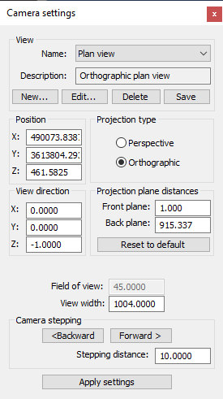
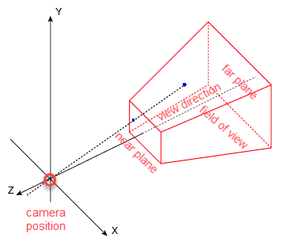
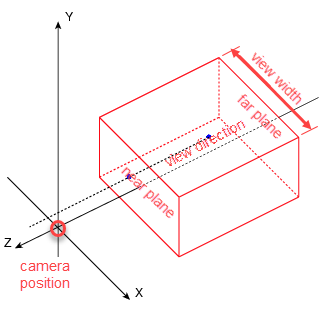

|
|
Toolbar:
Menu: CAD-Earth > Mesh commands > Mesh Viewer
|
|
|
Command line: CE_MESHVIEWER Mesh Viewer toolbar: CAD-Earth version: Premium. |
.png)
.png)
.png)
Command description:
You can add, edit, delete and save camera view related data, such as position, view direction, projection type, front and back projection distances, field of view and view width, specifying the name and description of the view. When you select a camera view name from the list, the current view and camera data will be automatically updated.
If you move the camera or modify the view direction, the data will be automatically updated in the dialog box.

Camera settings dialog box
Dialog box settings:
ØView.
•Name. Selecting a name from the list will update the current view and camera data will be automatically updated.
•Description. Additional information about the view will be displayed here.
•New... A dialog box will be displayed to enter the view name and description. The name must not contain the following characters: | * : ; > < ? , = ` \. The view description is optional.
•Edit... A dialog box will be displayed to edit the current camera view name and description.
•Delete. The current camera view will be removed from the list.
•Save. The current specified data will be saved under the view name.
ØPosition. XYZ coordinates from the camera position. This values will be updated when you move the camera.
ØView direction. XYZ coordinates from the camera view direction vector. This values will be updated when you rotate the camera.
ØProjection type. In perspective mode objects farther from the camera will appear smaller. In orthographic mode you can view object in true isometric or plan view.
ØProjection plane distances. These planes are perpendicular to the camera view direction. Everything between the front and back plane and inside the camera frustrum will be visible. The distances must be positive and are measured from the camera position to the plane in the view direction.
ØField of view. Is the open observable area from the camera position. Enter value in decimal degrees. Applies only for perspective mode projection.

Camera view frustrum in perspective projection.
ØView width. The view width can only be specified in orthographic projection mode because the bounding planes are parallel.

Camera view frustrum in orthographic projection.
ØCamera stepping. you can move the camera in the current view direction at the specified stepping distance pressing the backward or forward button.
ØApply settings. Press this button to update the current view using the data specified.
Tips:
•If you set the camera to orthographic projection mode and use the default view width, when you insert an image of the current view in the drawing it will have real world dimensions units.
•If you define new camera views, you must select to save when closing the Mesh Viewer and save the drawing to permanently store the view data.
Related topics:
Copyright © 2023 Arqcom Software
Google Earth© is a registered trademark of Google inc. All other trademarks are the property of their respective owners.